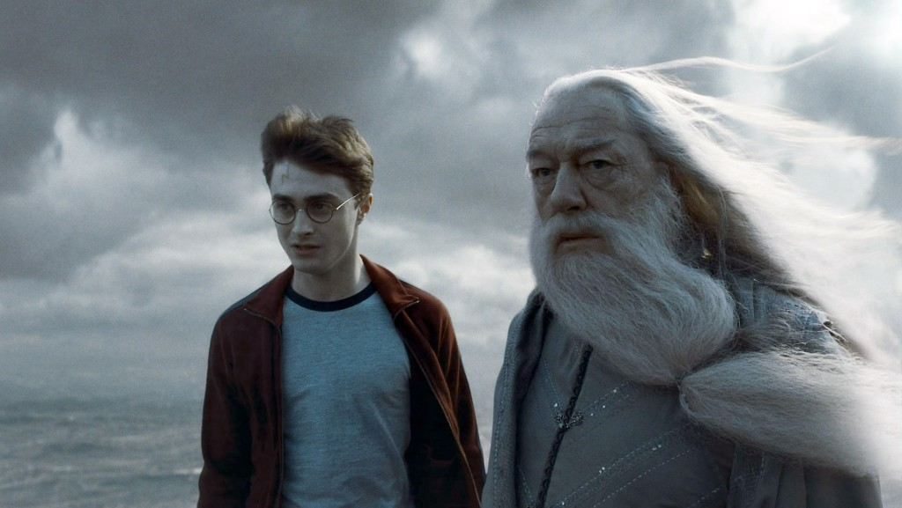
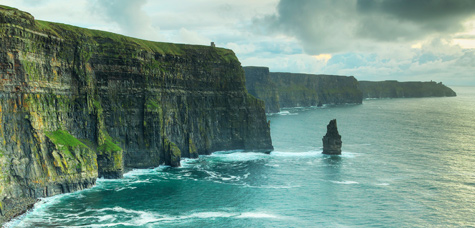

Cliffs of Moher
Tenho certeza que você já assistiu o meu filme "Harry Potter e o enigma do principe". Lembra daquela cena em que eu e o Dumbledore saimos de Hogwarts em direção a uma caverna que fica em uma rocha cercada por seres sobrenaturais? Sim, ela existe na vida real e você pode visita - la!
The Cliffs of Moher ou as falésias de Moher é um cenário de encantar os olhos, cuja beleza chega a atrair até um milhão de visitantes por ano. A pouco mais de duas horas de carro do centro de Dublin na Irlanda, as Falésias de Moher são as atrações naturais mais visitadas do país. No total, elas se estendem por oito quilômetros sobre o Oceano Atlântico e em seu ponto mais alto chegam a atingir 214 metros.
Do alto das falésias, ainda mais belas em dias de sol, é possível avistar as ilhas de Aron, a Baía de Galway, entre outros pontos fantásticos. Para explorar a trilha sinalizada, construída para os visitantes, é preciso estar devidamente calçado (um bom par de tênis antiderrapantes é altamente indicado); além disso, capas de chuva também são importantes, caso haja alguma mudança repentina no tempo, mas nem pense em levar sua vassoura, pois venta muito por lá!
Horário de Funcionamento: A partir das 09h00 até a 20h00 dependendo da empresa de transporte contratada
Melhor época para visitar: O clima na Irlanda é composto geralmente por vento, temperaturas mais baixas (mesmo no verão) e uma garoa fina ou chuva, então, não fique triste se o dia do seu passeio estiver assim, mas agradeça se pegar um tempo bom, isso é mais raro!
Valor: Onibus €11,64 e a entrada custa 6€, porém crianças e jovens até 16 anos não pagam.
Gostou do que viu até agora? Então clique aqui para conhecer mais um lugar!